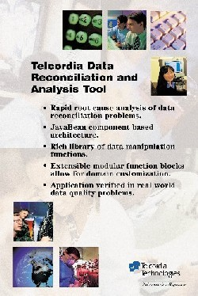
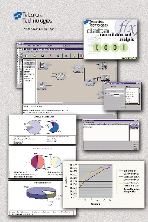

Demonstration of Telcordia's Data Reconciliation and Data Analysis Tool |
Telcordia Technologies
445 South Street
Morristown, NJ
U.S.A.
Contact: Munir Cochinwala
munir@research.telcordia.com
| Home | Features | Demo | Contents |
|
 |
 |